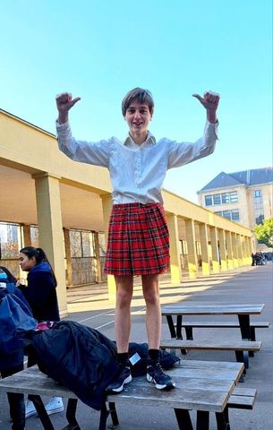
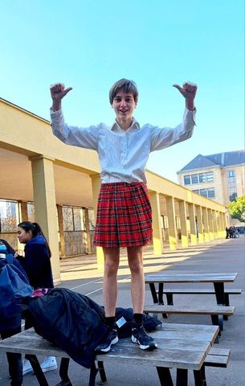

En 2021, Clovis Bourges crée le Parti Clomuniste à l'occasion de l'élection du CVL du lycée Claude Monet. Il est assisté de ses cloministres Maxence Dozol, alias le M, et Achille Le parti gagne très vite des adhérents, et grâce à une campagne rudement menée par Clovis et ses cloministres, le président du parti se hisse à la tête des résultats et siègeais au CVL jusqu'en septembre 2023. Le cloministre achille s'est fait élire l'année dernière au CVL et y siège jusqu'en juillet 2024. Le parti clomuniste oeuvre du mieux qu'il peut, à chaque instant pour rendre la vie des lycéens plus facile. Aujourd'hui nous voulons étendre notre influence sur d'autres lycées parisiens. Nous souhaitons également faire élire d'autres candidats au CVL du lycée Claude Monet.
La devise du parti clomuniste est "égalité, partage, solidarité".
L'égalité: nous pensons, au parti clomuniste, que chaque être humain mérite d'être traité de la même manière. Chaque lycéen peut apporter des idées qui permettraient une vie au lycée plus agréable et facile. L'idéal clomuniste serait une co-construction de projets et un partage d'idées.
Le partage justement, une autre valeur du clomunisme, le partage d'idées, de connaissances. La diversité qu'il y a dans le lycée et dans le monde en général, est une force que nous ne devons pas négliger. Le partage, c'est aussi une forme de solidarité, partager la connexion aux personnes n'ayant pas de 4G.
La solidarité, dernière valeur clomuniste, nous ne laissons pas tomber nos camarades. Nous avons chacun nos forces et nos faiblesses, mais l'union fait la force. Ensemble,solidairement, main dans la main (en respectant les gestes barrières), nous bâtirons le lycée de demain, un lycée où tout le monde sera à sa place, et où la paix et le clomunisme régneront.


 

Le parti clomuniste a une nouvelle fois été victime de la censure de la part de la direction, en effet notre affiche orignal n'a pas été retenu. Mais nous ne comptons pas nous laisser abattre, mais nous battre, mener une bataille médiatique grâce à la libertée d'expression sur internet, et nous mener à la victoire par les urnes! Alors soyez nombreuses et nombreux à voter pour nous ce mardi 17 octobre.
Vous souhaitez adhérer au parti, candidater sous notre drapeau pour l'élection du CVL ou juste nous poser une question. Contactez nous:
si le formulaire ne marche pas, cliquez ici.